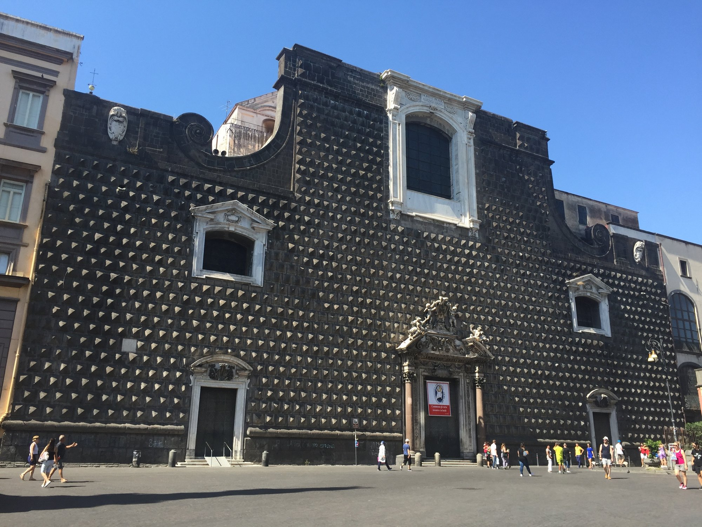

NOCTIS
NAPOLI / PIAZZA DEL GESÙ
FACCIATA FOTOGRAFICA · RICERCA
121 edifici OSM · altezze stimate · guglia indicativa

Una scena 3D più riconoscibile
La facciata del Gesù Nuovo è ora applicata come texture fotografica CC BY-SA a una parete nello spazio 3D, orientata lungo la reale impronta OSM dell’edificio. I palazzi lontani mantengono le sagome cartografiche, ancora con altezze di stima.
Cosa non è ancora pronto
La guglia mostrata è un modello di studio posizionato in modo indicativo, non rilevato. Il resto degli edifici è ancora volumetrico, non rifinito. Il materiale fotografico può contenere dettagli del giorno originale (come persone). Non è un gioco né la qualità artistica finale.
Puoi ruotare il punto di vista trascinando e avvicinarti con rotellina o due dita. Proveremo il personaggio solo dopo aver approvato una scena valida.